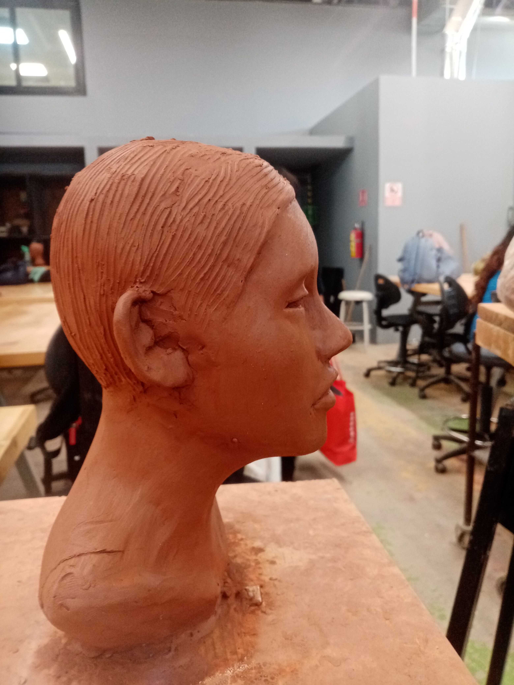
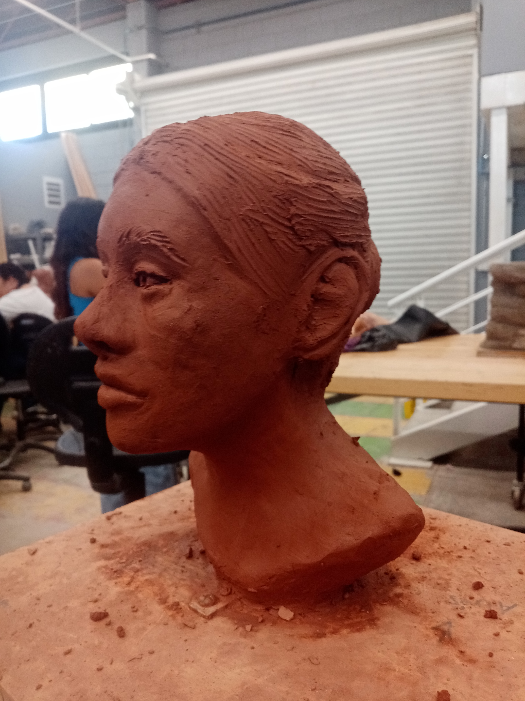
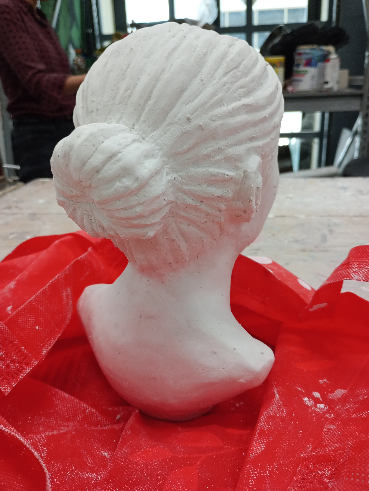
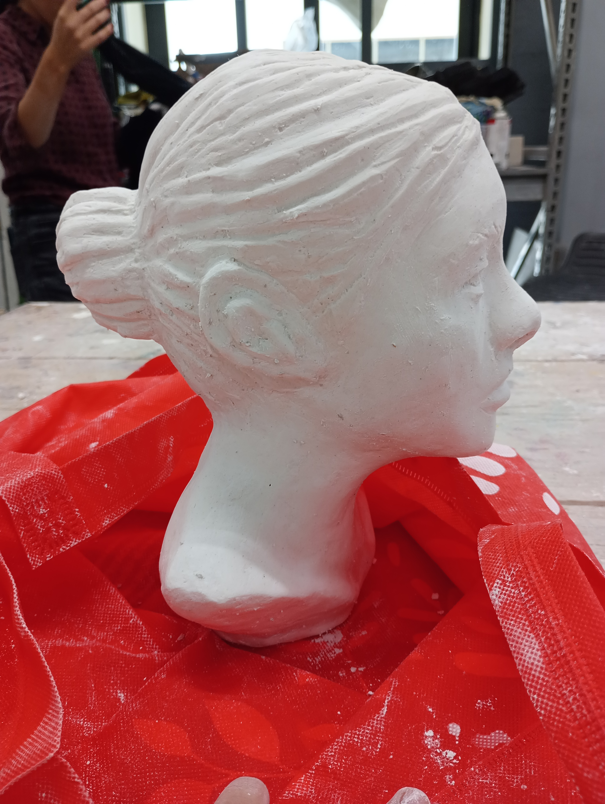
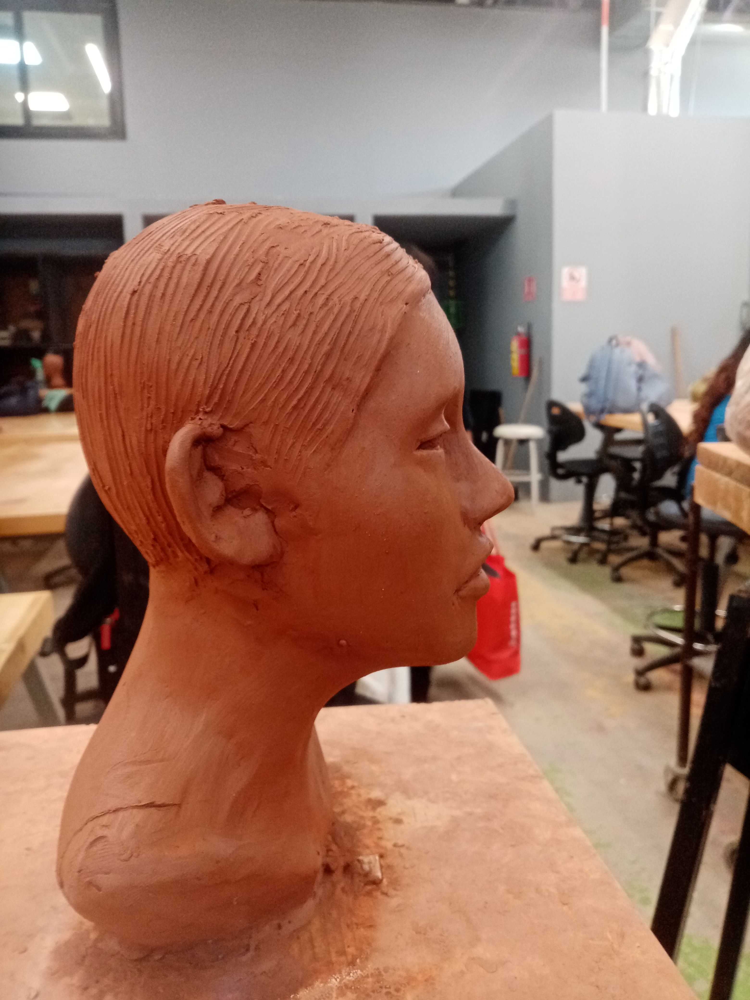
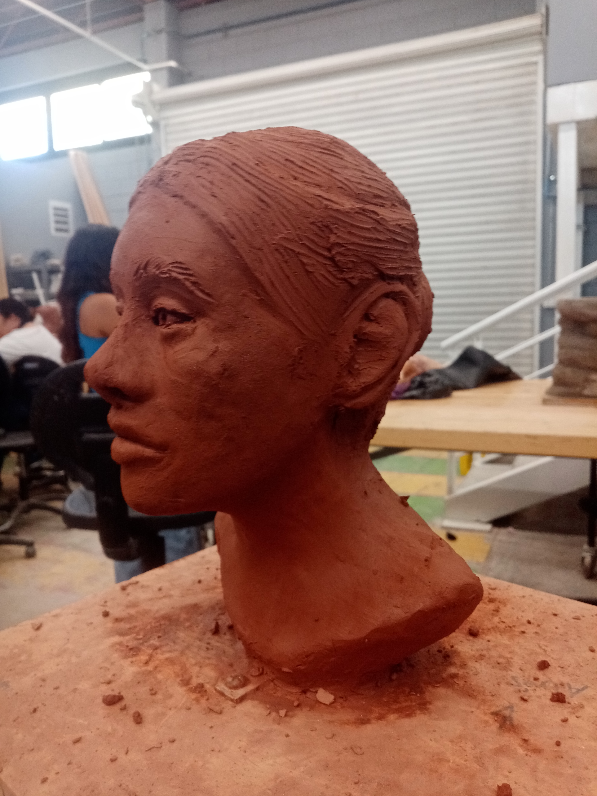
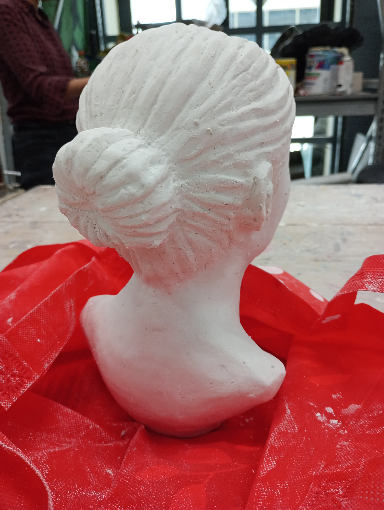
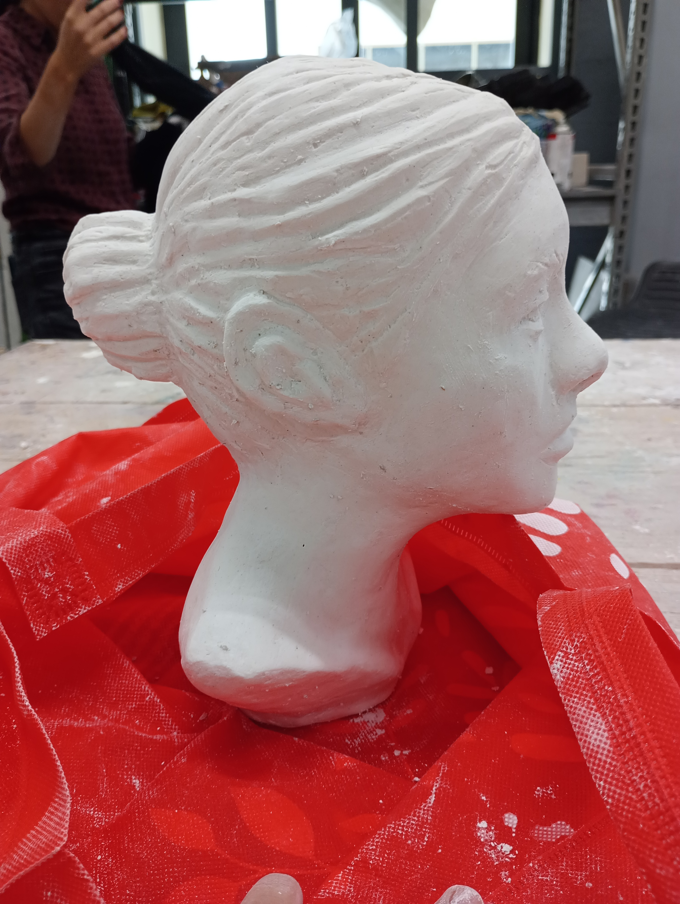

Mi Trabajo en Escultura
 







La escultura me permite dar vida a mis ideas a través de diferentes materiales. Cada pieza es un reflejo de mi visión artística y mi dedicación al detalle.
Volver al PortafolioTécnicas Utilizadas
En mi trabajo con escultura, utilizo diversas técnicas para dar forma y vida a mis piezas:
- Tallado: Utilizo herramientas especializadas para esculpir materiales como madera y piedra.
- Modelado: Trabajo con arcilla y otros materiales moldeables para crear formas únicas.
- Ensamblaje: Combino diferentes materiales para crear piezas complejas y dinámicas.
Materiales
Trabajo con una variedad de materiales para crear mis esculturas:
- Madera: Para piezas talladas con detalles intrincados.
- Arcilla: Para modelar formas orgánicas y expresivas.
- Metal: Para estructuras resistentes y modernas.
Herramientas que Uso
Utilizo una amplia variedad de herramientas para dar forma y textura a mis esculturas, desde herramientas profesionales hasta objetos cotidianos:
- Herramientas Craftsmart: Para detalles precisos y acabados finos.
- Espátulas y cuchillos de modelado: Para dar forma a la arcilla y otros materiales.
- Objetos cotidianos: Como cepillos, peines o incluso juguetes, para crear texturas únicas.
Inspiración
Mi trabajo está fuertemente influenciado por los monstruos y criaturas del cine de terror, especialmente los de directores como:
- Guillermo del Toro: Por su capacidad para crear criaturas que combinan belleza y terror.
- Tim Burton: Por su estilo gótico y sus personajes llenos de personalidad.
Estas influencias me inspiran a crear esculturas que cuenten historias y evoquen emociones intensas.
Pasíon por Contar Historias
Para mí, la escultura no es solo crear formas, sino contar historias. Cada pieza que hago tiene un mensaje, una emoción o una narrativa que quiero transmitir. Ya sea a través de una criatura fantástica o una figura abstracta, busco que mis esculturas hablen por sí mismas y conecten con quienes las observan.